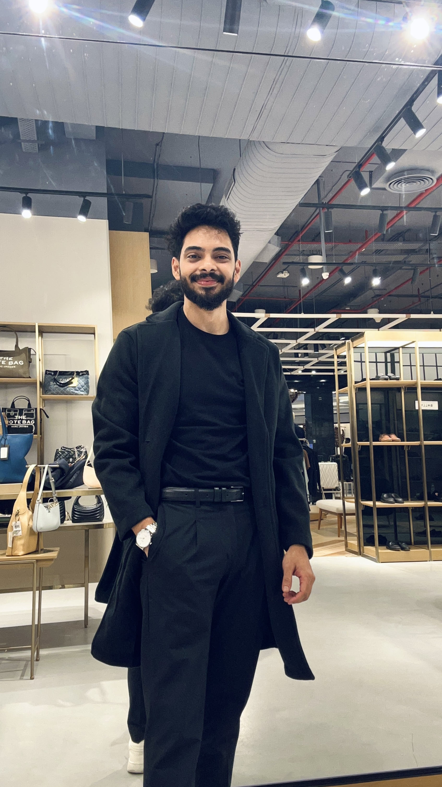
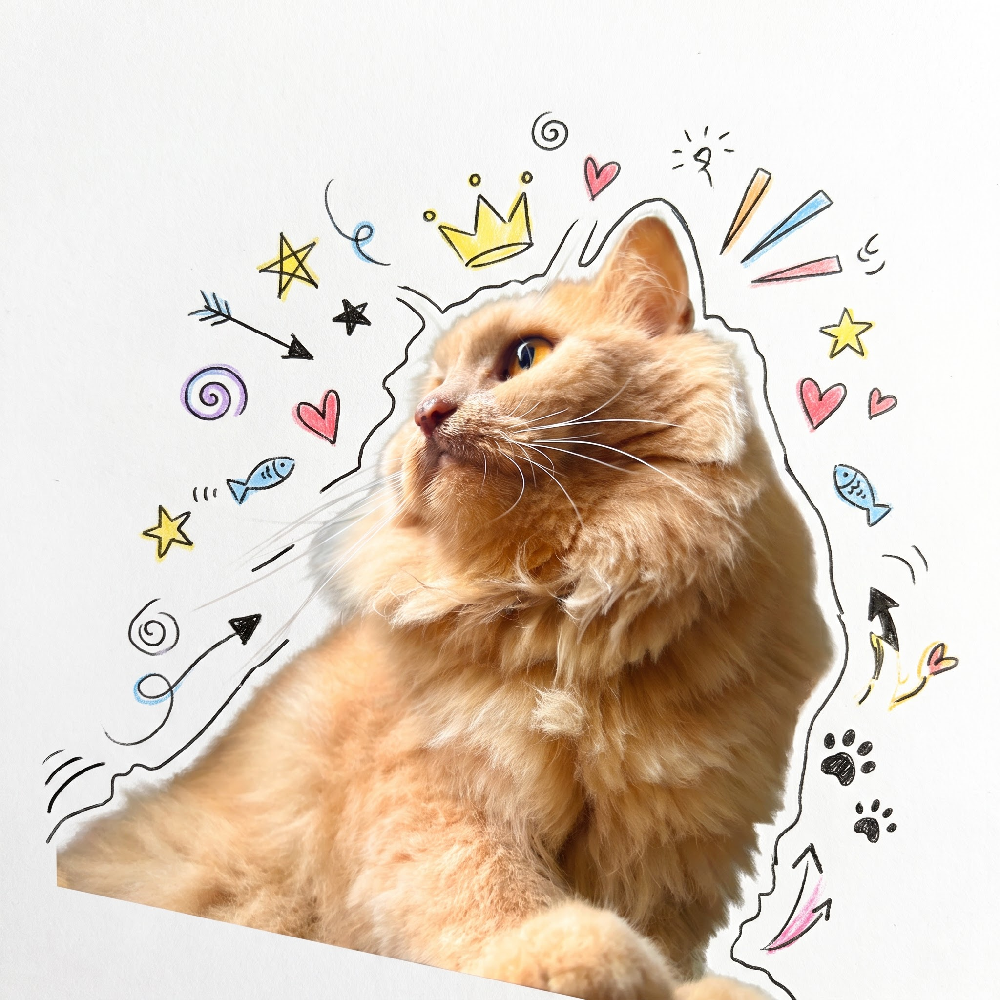
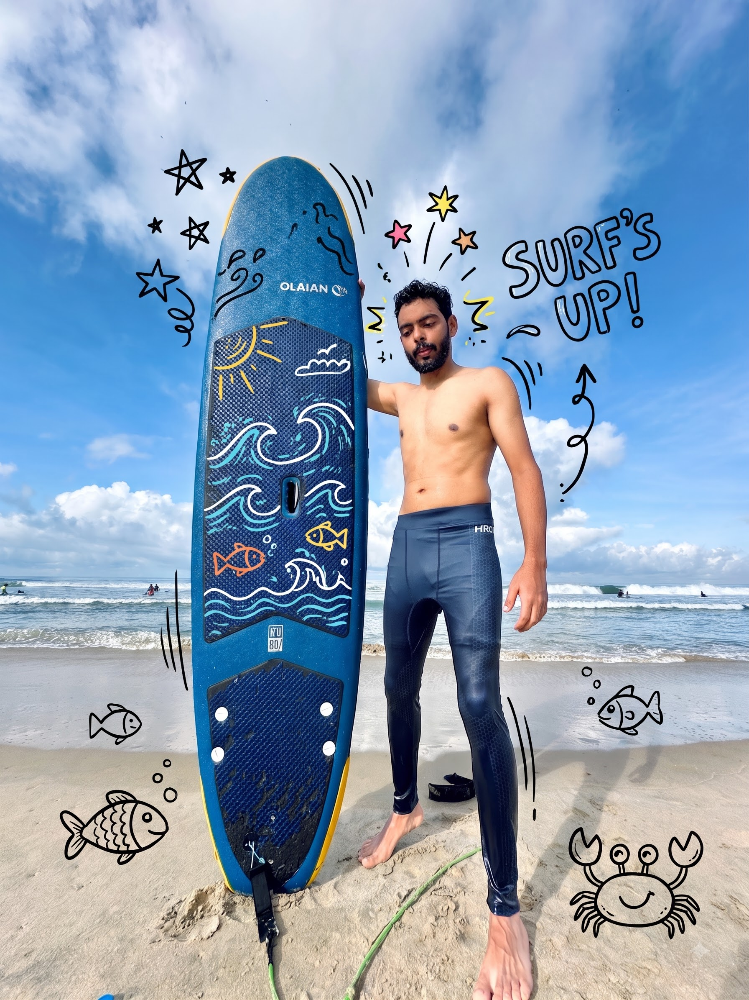

DevOps Engineer · Chandigarh, India
I build systems that let banking-scale teams ship without holding their breath. Multi-cloud infrastructure, zero-trust identity, CI/CD that actually gates releases.
Tools I reach for every day — and a few I reach for when things break.
"If a human has to rotate it, it's a future incident. Automate the credential, not just the fix."
Four flagship engineering stories from production banking infrastructure.
Eliminating every static secret from a Fortune 500 banking environment — passwordless, by design, at scale.
Airgapping a production OpenShift cluster — and choosing the boring option on purpose.
A full-cluster outage, root-caused, fixed across 9 namespaces, and turned into a script so it can't happen the same way twice.
Building the automated test platform every release runs through before it ships — from zero to 1,600+ tests, one auth provider at a time.

Hey.
Thanks for stopping by. I'm Munish — the engineer. Kabir's the one with better work-life balance.

"You've really been through the trenches to know all the nuances of this process."
Jeffrey Canisius
Feb 2026 · after resolving a telemetry server issue on ROSA
"Debugging is where I learned the most."
Abhishek Lale
Dec 2024 · on learning HAIC Azure deployments together
AWS (EKS, EC2, S3, Lambda, IAM, Secrets Manager) · Microsoft Azure (AKS, Key Vault, Workload Identity) · Google Cloud Platform · Red Hat OpenShift (ROSA/ARO) · Helm · CRDs · RBAC
Terraform — 25+ resource types authored, multi-cloud
Jenkins · GitHub Actions · GitHub OIDC · Playwright · Allure · TestRail
AWS IAM · OIDC · Azure Workload Identity · Federated credentials · Trivy vulnerability scanning
Python · Bash · SQL · Groovy
PostgreSQL · Kafka · Snowflake · Databricks · Redis · MinIO
Claude Certified Architect — Foundations (CCA-F), Anthropic in progress, 2026 · B.Tech, IIIT Pune (2016–2020)